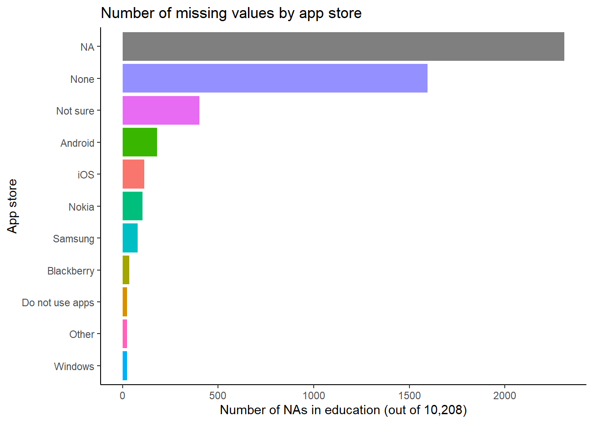

Chapter 6 Analysis 3: Price-sensitive users
6.1 Income Distribution

Here we are going to analyze the incomes based the pre-divided intervals as well. For uses in the North America, there are similar distributions (close to normal) for CAD (Canada Dollar) and USD (US Dollar), while Mexican incomes appear to be more evenly distributed. CNY (Chinese Yuan) users’ incomes are clustered in a higher level. Incomes in JPY (Japanese Yen) mainly range from level 3 to 8, with no data in the highest level of 10 and 11. Most of the Korean respondents seem to be students from our guess since lots of them earn the lowest level of income. In Europe and other continents, number of the price-sensitive using EUR and BRL (Brazilian Real) appears to be larger than other countries and most observations are clustered under level 5, but for INR (Indian Rupee), there are more people having higher incomes. Overall we can see that income distributions differ a lot in each country.
6.2 Reasons why people download apps they spent on
For both types of users, many answered “game(s)” (“angry birds” in particular) and an upgrade of “pro” version as the reasons why they downloaded the apps that they had in-app purchase in. Price-sensitive users (word cloud on the left) also spent money on “zombie” type of mobile games. Another obvious pattern for the price-sensitive is that they “can’t remember” the reasons for downloading apps but they do remember they’ve spent money on those apps. In the meanwhile, people that are not as price-sensitive (word cloud on the right) purchased “google” and “office” products essential for business or study.
6.3 Why did people pay?

Most people do not pay for apps. Among users who spend on apps, many chose “No similar free app”, “For additional features or contents” in a paid app and “For features” in an initially free app as the top reasons why they purchase. Another interesting reason is that people think “paid apps have better quality/more features than free apps in general”. These popular reasons would be a great guidance for app developers: they should at least meet the user expectation that the apps cost more must have more features or quality contents available. In addition, price-sensitive users usually pay for an app when it “is on sale”. So sales promotions are a good choice for developers to pitch their apps to potential users.